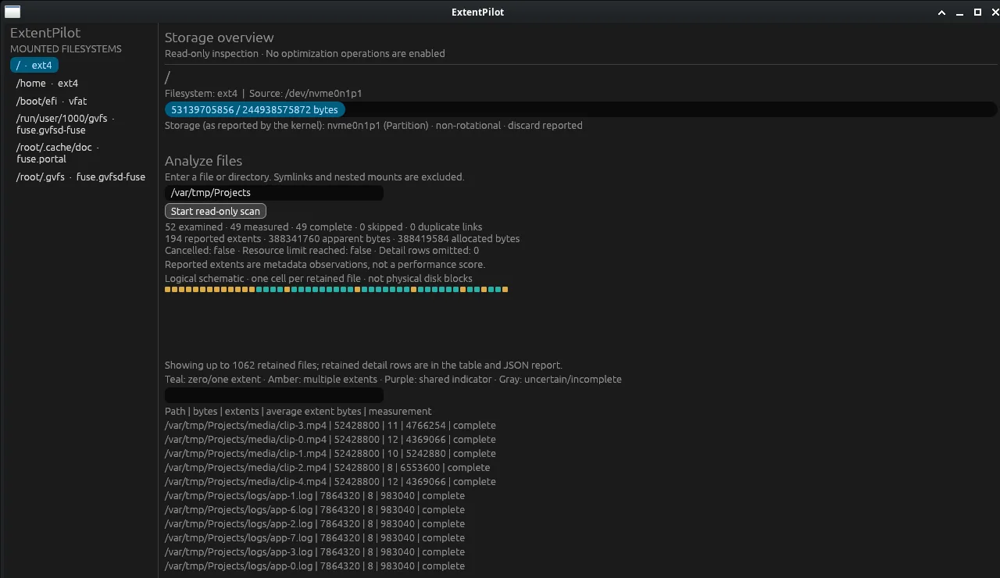
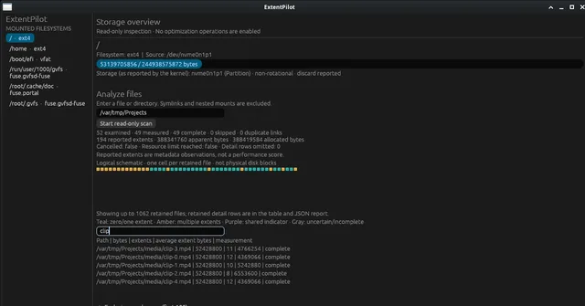
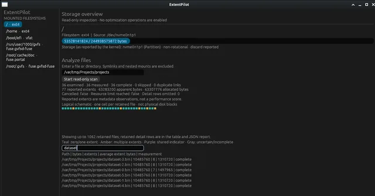

Real extent counts
Each file's extent count, average extent, largest extent, logical size and allocated size, read through the FIEMAP ioctl.
ExtentPilot measures how files sit on disk using the Linux FIEMAP ioctl. Scan a folder to get each file's extent count, largest extent and size, a one-cell-per-file schematic and a searchable table. It never modifies a file.

ExtentPilot reports what the kernel says about each file and is careful not to claim more. Nothing it does writes to your files.
Each file's extent count, average extent, largest extent, logical size and allocated size, read through the FIEMAP ioctl.
Scans never create, move or change a file. The GUI refuses to run as root, so a scan only sees what your user can see.
Walks with held descriptors and openat2. Symlinks, special files and nested mounts, including bind mounts, are rejected.
Shared extents and measurements the kernel could not vouch for are flagged, with a completeness note for each scan.
One cell per file, colored by extent state. It is a logical view of your files, not a physical map of the disk.
A virtualized table of up to 5,000 retained rows that you can search and sort, even for large trees.
The command line writes a full JSON report with per-file rows and raw filename bytes.
extentpilot analyze PATH --jsonCancel between entries and ioctl batches. Partial results stay visible. Hard-linked files count once.
Gray marks uncertain cells, purple a shared extent, amber more than one extent and teal zero or one extent.


| Area | Status |
|---|---|
| Linux 5.6 or newer | Needs openat2 with RESOLVE_BENEATH and RESOLVE_NO_XDEV, a mounted procfs and a Wayland or X11 session for the GUI. |
| Filesystems | Any filesystem that implements FIEMAP, such as ext4. Some, such as tmpfs, reject it; that is reported as unavailable, never as zero fragmentation. |
| Packaging | Not packaged yet. Build from source with Rust 1.95 or newer. |
| Scope | Analysis only. No defragmentation, TRIM, history or scheduling is implemented. |
ExtentPilot is a development build with no package yet. You need Rust 1.95 or newer and a Linux desktop session.
sudo apt install git build-essential
git clone https://github.com/mikeholp87/defrag-hdd-linux
cd defrag-hdd-linuxcargo run --releaseEnter a folder and start a scan. The GUI refuses to run as root.
cargo run --release -- drives
cargo run --release -- analyze ~/Documents
cargo run --release -- analyze ~/Documents --json > report.jsonJSON reports contain filenames, so store them privately. File contents are never exported.
Scanning uses read-only ioctls on descriptors it holds. No file is created, moved, truncated or rewritten.
Missing shared flags do not prove an extent is unshared, and a scan is not an atomic snapshot. The report says so.
Scans stop at 100,000 entries and 128 directory levels, and totals still cover every measured file.
No. This build only analyzes. Defragmentation, TRIM, scheduling and privileged backends are not implemented, and the app makes no claim that fewer extents means faster reads.
No. It has one cell per retained file, in scan order, colored by extent state. Physical addresses never drive any raw I/O and are not shown as a disk layout.
The filesystem or permissions did not allow FIEMAP for that file. Memory filesystems such as tmpfs reject it with EOPNOTSUPP, and unavailable is not the same as unfragmented.
Scans use your user's permissions on purpose, so a scan cannot reach files you could not already read.
Open an issue on GitHub.